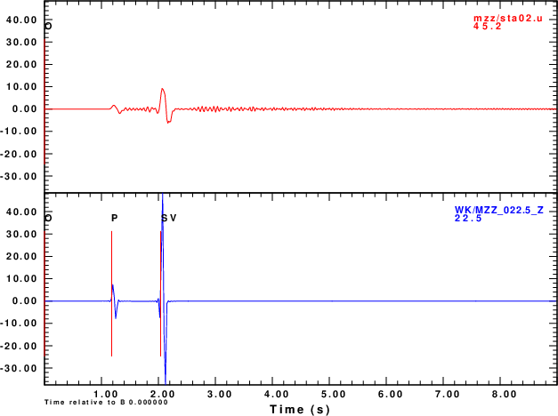
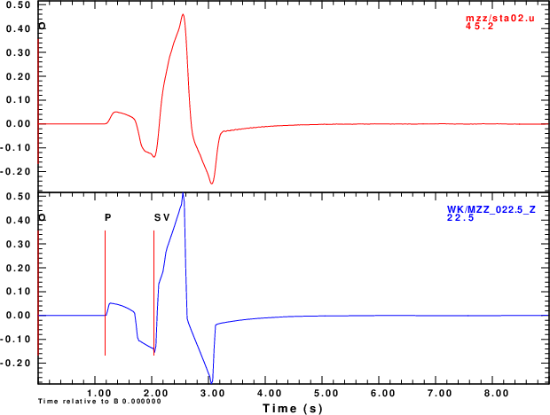
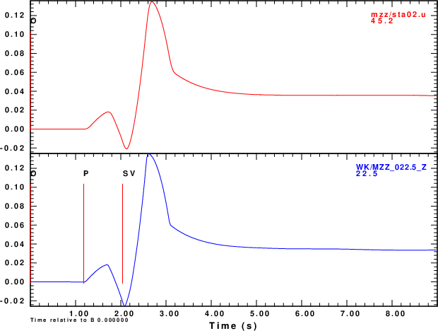

The purpose of this exercise is to compare SW4 synthetics to the wavenumber integration synthetics using Computer Programs in Seismology codes. For efficiency, the velocity model is a uniform halfspace with infinite Q. The source is a a depth of 5.0km from the free surface and the epicentral distance is 5.0 km. Synthetics are compared at a range of azimuths from 0o to 180o in increments of 22.5o.
The conclusion is that the two codes are in agreement.
Version 3.0 was downloaded from https://github.com/geodynamics/sw4/ by clicking on the Code pull-down menu and then clicking on the Download ZIP to get the sw4-master.zip. The file doc/SW4-Installation.pdf gives instructions on compiling the code.
I compiled on an older machine with four processing cores that was running Linux Mint 22.1 (xia). Following Section 5.1.2 of the SW4-Installation.pdf, I did cp make.linux make.inc in the directory configs and the edited the make.inc so that it read:
FC = gfortran CXX = mpicxx EXTRA_LINK_FLAGS =-L/usr/lib/x86_64-linux-gnu -llapack -lblas -lgfortran
Prior to compiling, I followed the guidance to ensure that the proper libraries were available. I did this by using the Software Manager and the program synaptic on this version of Mint. I then returned to the main directory and entered make. Note that I did this quickly and did not write down the libraries obtained using synaptic. Since I was going to compile codes using the libraries, I believe that I also downloaded the development versions, e.g., libblas-dev.
Since this is a Linux system, I can use the ldd command to list the shared libraries that sw4 is using:
linux-vdso.so.1 (0x00007ffd9b9c0000) liblapack.so.3 => /lib/x86_64-linux-gnu/liblapack.so.3 (0x000072a3a8800000) libgfortran.so.5 => /lib/x86_64-linux-gnu/libgfortran.so.5 (0x000072a3a8400000) libmpi_cxx.so.40 => /lib/x86_64-linux-gnu/libmpi_cxx.so.40 (0x000072a3a958b000) libmpi.so.40 => /lib/x86_64-linux-gnu/libmpi.so.40 (0x000072a3a9459000) libstdc++.so.6 => /lib/x86_64-linux-gnu/libstdc++.so.6 (0x000072a3a8000000) libm.so.6 => /lib/x86_64-linux-gnu/libm.so.6 (0x000072a3a8f17000) libmvec.so.1 => /lib/x86_64-linux-gnu/libmvec.so.1 (0x000072a3a8307000) libgomp.so.1 => /lib/x86_64-linux-gnu/libgomp.so.1 (0x000072a3a9401000) libgcc_s.so.1 => /lib/x86_64-linux-gnu/libgcc_s.so.1 (0x000072a3a8ee9000) libc.so.6 => /lib/x86_64-linux-gnu/libc.so.6 (0x000072a3a7c00000) libopenblas.so.0 => /lib/x86_64-linux-gnu/libopenblas.so.0 (0x000072a3a5800000) /lib64/ld-linux-x86-64.so.2 (0x000072a3a95c8000) libopen-pal.so.40 => /lib/x86_64-linux-gnu/libopen-pal.so.40 (0x000072a3a874c000) libopen-rte.so.40 => /lib/x86_64-linux-gnu/libopen-rte.so.40 (0x000072a3a7f44000) libhwloc.so.15 => /lib/x86_64-linux-gnu/libhwloc.so.15 (0x000072a3a8e88000) libevent_core-2.1.so.7 => /lib/x86_64-linux-gnu/libevent_core-2.1.so.7 (0x000072a3a82d2000) libevent_pthreads-2.1.so.7 => /lib/x86_64-linux-gnu/libevent_pthreads-2.1.so.7 (0x000072a3a93fa000) libz.so.1 => /lib/x86_64-linux-gnu/libz.so.1 (0x000072a3a93dc000) libudev.so.1 => /lib/x86_64-linux-gnu/libudev.so.1 (0x000072a3a829f000) libcap.so.2 => /lib/x86_64-linux-gnu/libcap.so.2 (0x000072a3a873f000)
The final step that I took was to get the sw4 executable into the PATH variable. I did this in the .profile file in my login directory by entering the lines that point to the directory on my system:
# add sw4 PATH="$PATH:/d/rbh/PROGRAMS.310t/SW4/sw4-master/optimize_mp"
Download and unpack the sw4cps.tgz and
gunzip -c sw4cps.tgz | tar xf - cd SW4CPS
Within SW4CPS there are several scripts. The scripts have comments, so read them. To duplicate the figures shown in the discussion below, run the following commands. Note: if you do not have :.: in your PATH, then where I indicate DOALL you must enter ./DOALL.
# run the CPS hprep96/hspec96/hpulse96 codes (cd WK ; DOWK ) # run the SW4 scripts DOALL # make the plots that compare the synthetics # for the six moment tensor elements DOPLTMT # make the plots that compare the synthetics for # the point forces DOPLTF
The result will be the plots in the PNG format, e.g., MXX_E.png which will display the E component of motion for the Mxx dipole or FD_Z.png which will display the Z component for the downward vertical force.
The WK directory will have the CPS Green's functions, e.g., of the form 000500050.ZVF. These are computed for a halfspace velocity model HALF.mod which uses km, km/s and gm/cm3 for units. The DOWK script uses the gsac mt command to apply a mechanism. The moments are given in dyne-cm and the forces in dyne. The output traces will be in units of m. The hpulse96 -V flag indicates the Green's functions will be in units of cm/s for a step-like source time function. The output of the gsac mt command will thus be m/s
The Z, N and E synthetics thus created are for moment tensor elements of 1.0e+25 dyne-cm or forces if 1.0e+20 dyne. The equivalent strengths used in the SW4 simulations are a moment of 1.0e+18 nt-m and a force of 1.0e+15 nt.
To create the input files for SW4, I modified the LOH.1 scripts that are described in Section 10 of the SW4-UsersGuide.pdf.
The DOALL script runs the parameter files with a line such as
mpirun -np 3 sw4 mzz.in
The results are in the directory mzz in Sac files with names such as sta01.e, sta01.n and sta01.u. The Sac headers are properly set so that the traces could be rotated using sac or gsac to form radial and transverse components. Note by default the event coordinates are in California, e.g., EVLA 37.08983 EVLO -117.8874. Even though the computations are for an epicentral distance of 5000m, the values in the Sac file are slightly different.
Each method has its own quirks. Since comparisons are made at low frequencies, I will not worry too much about details at high frequency. In both sets of computations, I use a triangular pulse. The far-field velocities of the body waves should appear as the derivative of the triangular shape, which is boxish. The SW4 internally computes the best sampling interval which will not be the same as that using in the CPS codes. So both will be low-pass filtered.
The final comparisons are excellent.
| Computational output |
|---|
|  |
| triangle w 1 output |
|  |
| int |
|  |
The figure linked here show the results of the comparison. The CPS convention is that positive motion one the N, E and Z components are to the north, east and up. The SW4 convention for the sac files using the nsew=1 flag is that positive n, e and u correspond to motion in the north,east and up directions.
In the comparisons below the red traces are from the SW4 simulation and the blue are from the CPS codes. In the few cases that there are differences in the traces, the amplitudes are small since the amplitudes should be nodal.
These result from the commands triangle w 1 and int.
These result from just the commands triangle w 1. Comparisons are made for the E, N and Z(up) components for forces in the E, N and down directions, e.g., FX, FY and FD.
The CPS documentation shows how the CPS Green's functions are combined to make three-component time histories for point force and moment tensor sources.
The comparison show excellent agreement between the synthetics made using SW4 and the CPS wavenumber integration codes. Although some of the trace comparisons look bad, read the amplitudes. These are actually at nodes of the radiation pattern, and the traces just reflect numerical noise.
{kind=link}
{kind=link}
{kind=link}
{kind=link}
{kind=link}
{kind=link}
{kind=link}
{kind=link}
{kind=link}
{kind=link}
{kind=link}
{kind=link}
{kind=link}
{kind=link}
{kind=link}
{kind=link}
{kind=link}
{kind=link}
{kind=link}
{kind=link}
{kind=link}
{kind=link}
{kind=link}
{kind=link}
{kind=link}
{kind=link}
{kind=link}